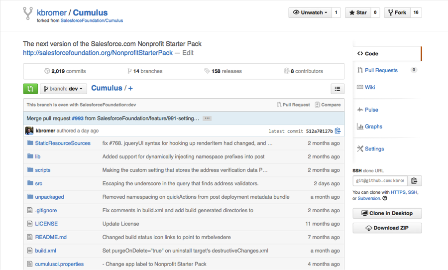
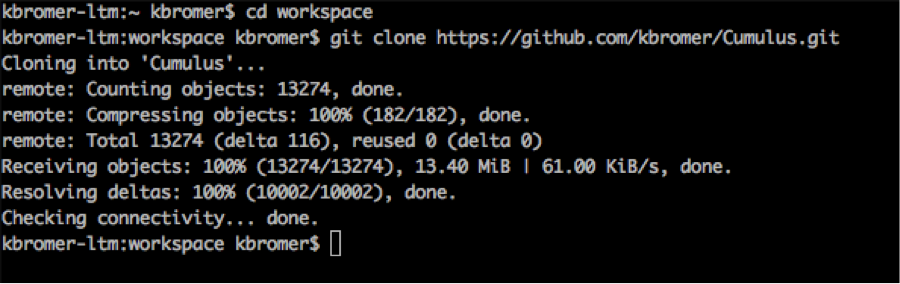

The Nonprofit Starter Pack’s source code is hosted on Github, and you’ll need a github account to contribute to NPSP. If you don’t have an account, create one first.
Next, we need to fork the latest NPSP code and create our own repository. Login to Github and head to the Cumulus github repository In the upper right hand corner, you’ll see the ‘Fork’ button. Click it. Create your fork. It should look something like this:

Since this is our own copy of the repository, we can modify this as much as we’d like without affecting anything else in the main repo.
Now, lets pull the repo down into a local repository on our machine using git clone. At the command lane change into the directory where you want your code to live, then run:
sh
git clone https://github.com/<user_name>/Cumulus.git
If you have trouble cloning the repository, you may need to setup github ssh access. Remember the directory where you have cloned the repository as we’ll be coming back here often throughout the process.

CumulusCI is a continuous integration system that aids in our development process. To set it up, you’ll need to clone another github repository onto your local machine, then setup an environment variable so that we know where to find that code.
In the command line, go to another directory where you’d like to store CumulusCI, and run:
sh
git clone https://github.com/SalesforceFoundation/CumulusCI.git
Make sure to take note of this directory as we’ll need it later. We’re not creating a fork here as we’re not expecting to make any changes to CumulusCI, although if you want to contribute to our continuous integration system, that’s more than welcome.
We need to add the environment variable CUMULUSCI_PATH with the path to our local CumulusCI repository.
First, open your ~/.bash_profile file, creating one first if you don’t have one:
sh
touch ~/.bash_profile
open ~/.bash_profile
Then, put the following line in your file:
export CUMULUSCI_PATH=~/Documents/dev/CumulusCI/
Lastly, back in the command line, run:
source ~/.bash_profile
Congratulations, you are all set up with github! The next step is to choose an IDE. Any IDE will work, we provide instructions for setting up the Force.com IDE as well as instructions for working with any IDE of your choice.